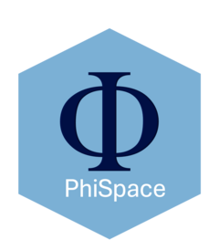

Multiomic annotation: using CITE-seq reference to annotate CITE-seq query
Jiadong Mao
2025-02-11
CITE-seq.RmdLoad the packages.
# Name of the game
suppressPackageStartupMessages(library(PhiSpace))
# Tidyverse packages
suppressPackageStartupMessages(library(ggplot2))
suppressPackageStartupMessages(library(dplyr))
suppressPackageStartupMessages(library(magrittr))
suppressPackageStartupMessages(library(ggpubr))
suppressPackageStartupMessages(library(tidyr))
# Other utils
suppressPackageStartupMessages(library(ComplexHeatmap)) # plot heatmap
suppressPackageStartupMessages(library(zeallot)) # use operator %<-%
suppressPackageStartupMessages(library(plotly)) # plot 3d interative plotsTBC